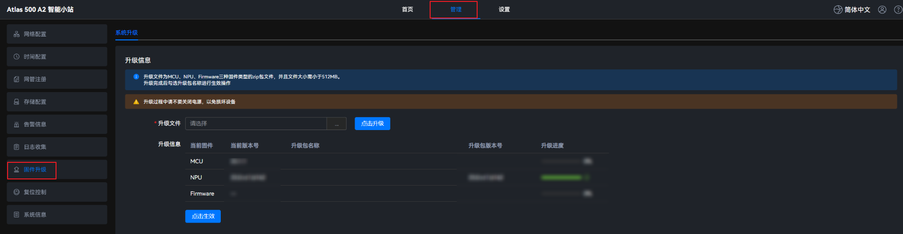
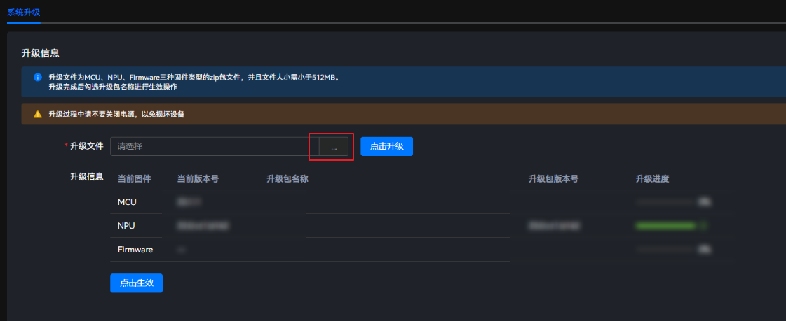
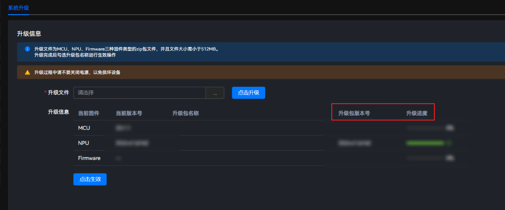
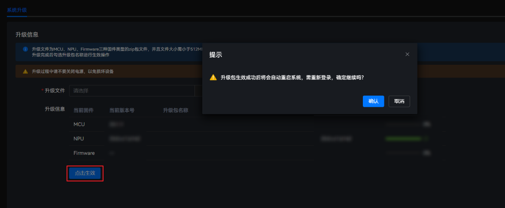

流程说明
- 获取软件包。获取待升级版本的软件包。
- 登录Atlas IES。登录Atlas IES Web界面，在界面上完成升级操作。
- 查看告警信息。在主菜单中选择，查看当前设备上有无需要处理的告警，避免因环境问题导致升级失败。
- 上传软件包。上传需要升级的软件包。当前支持2种升级场景，支持上传1个软件包后就生效的场景和3个软件包一起上传后再点击生效的场景。这2种场景并不会导致任何的差异，用户可以根据需要自行选择。
- 升级后验证。在主菜单中选择，可以查看升级后的版本。
操作步骤
- 在主菜单中选择。图2 系统固件升级
 - 单击“升级文件”后的
 ，选择升级文件。图3 选择升级文件
，选择升级文件。图3 选择升级文件

- 文件名称长度为1~255个字符，可由英文字母、数字、下划线、点和短横线组成。
- 上传过程中，请勿切换或者关闭当前页面，否则会导致上传失败。
- 升级文件支持MCU、NPU和Firmware三种固件类型的zip包文件，文件大小需要小于512MB。
- 单击“点击升级”。

- 升级过程中请不要关闭电源，以免损坏设备。
- 升级过程中请不要对Atlas 500 A2 智能小站进行业务配置及其它维护类操作，以免配置丢失或升级失败。
- 不支持连续两次点击升级，否则可能导致升级失败。若用户连续两次点击升级，第二次升级会失败，可通过使用自定义FusionDirector证书，设备兼容性问题章节进行处理。
升级包生效后，系统自动重启。
升级完成后，系统会跳转到登录界面，此时系统正在重启，请耐心等待1分钟，然后登录确认升级是否成功。
可在页面查看升级版本号、升级结果等信息。
图4 查看升级信息
 - 单击“点击生效”，弹出操作确认提示框。图5 点击生效
 - 单击“确认”。等待系统完成重启。
升级固件版本后，请刷新浏览器或清除缓存后再登录Atlas IES，避免因浏览器缓存问题导致页面加载不完全。